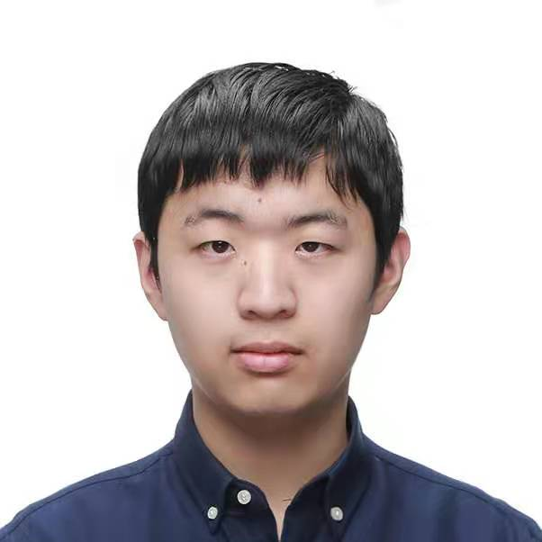

About me
Hi! I'm an ECE MEng student at the University of Waterloo. I got my bachelor's at Jilin University with a major in software engineering, and I'm currently aiming for a specialization in artificial intelligence for my MEng program.
Some of my skills are:
- Familiarity with popular programming languages (C, C++, Java, Python)
- Understanding of software engineering processes, tools, and data structures
- Experience in common ML toolkits and libraries such as Keras and Scikit-learn
- Elementary knowledge and skills of computer vision and deep learning
Education
University of Waterloo (2021.9-present))
- Cumulative GPA: 92.83
- Aiming for a specialization in Artificial Intelligence
Jilin University (2017.8—2021.8))
- Percentage grade: 89.75
- Major in software engineering
- A member of the Pilot Program in Engineering
Projects
Handwritten Digit Recognition with AWS (2022.8)
- Trained and deployed a Pytorch model for handwritten digit recognition on an Amazon SageMaker endpoint
- Connected the endpoint to a web application using Amazon Simple Storage Service (S3) and Amazon API Gateway
Intelligent Agent for Minecraft, University of Waterloo (2022.3 - 2022.8)
- Adopted a behavioral cloning system for obtaining diamonds in Minecraft
- Further improved the performance by combining multiple models and supporting them with hard-coded scripts
Academic Experience
Wrapper-based Feature Selection, Jilin University (2020.9 - 2021.5)
- Improved the genetic algorithm using the idea of reinforcement learning: Guide the mutation stage with a Q-table that is calculated during the evolution process
- Proved that the introduction of Q-learning improves the classification accuracy and dimensionality reduction rate by evaluating the algorithm on a series of UCI datasets
Online Summer Research Program, University of Miami (2020.7.13-2020.8.31)
- Worked on GAN-based retinal image generation with Dr. Mohamed Abdel-Mottaleb
- Proposed a data-driven approach to synthesize retinal images and the corresponding vessel maps
Deep learning workshop, University of Miami (2020.1.27-2020.2.14)
- Learned the fundamentals and basic skills in deep learning and Python
- Built a StarCraft 2 agent with supervised learning, achieving a winning percentage of 68% against Very Hard AI
Languages
English: TOEFL iBT, 106 / TOEIC, 910
Chinese: Native
Japanese: JLPT, N1
Honors and Awards
- System Architect Qualification of Computer and Software Professional (2019.11)
- Third prize in China Undergraduate Mathematical Contest in Modeling (2018.12)
- Third-class scholarship in College of Software (2018.11)